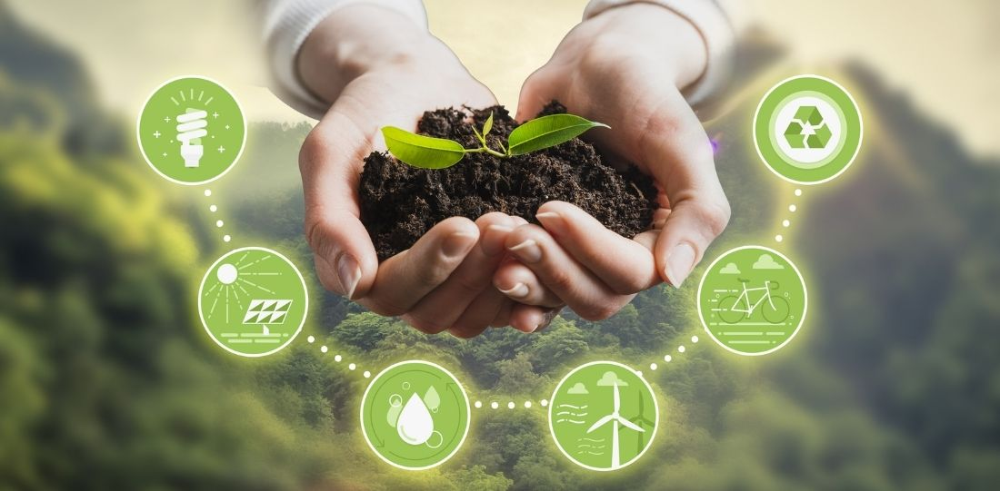

De acuerdo con su definición, el Desarrollo Sostenible busca satisfacer las necesidades de las generaciones presentes sin comprometer las posibilidades de las generaciones del futuro, contando con tres factores claves: sociedad, economía y medio ambiente.
¿Desarrollo sustentable o sostenible?
La diferencia entre desarrollo sustentable y sostenible es: El primero es un proceso que incluye la preservación, conservación y protección de los recursos naturales. El segundo busca asegurar procesos saludables para satisfacer las necesidades sociales y económicas de los seres humanos.
Indicadores de sustentabilidad
Los indicadores de sostenibilidad ambiental constituyen una metodología para evaluar las incidencias de los procesos productivos sobre el medio ambiente. Estos indicadores permiten cuantificar el grado de responsabilidad y sostenibilidad ambiental de un individuo, organización o comunidad.

Criterios de sustentabilidad
Cuando hablamos de criterios sostenibles nos referimos a aquellas pautas que evitan o, en su defecto, minimizan el impacto ambiental, económico y social producido por la acción antrópica (en adelante Acción) que se esté planificando, desarrollando o explotando.
Parámetros de desempeño ambiental.
Según la OCDE, un indicador ambiental es un parámetro o valor derivado de parámetros que proporciona información para describir el estado de un fenómeno, ambiente o área, con un significado que va más allá del directamente asociado con el valor del parámetro en sí mismo.
PRESION. Actividades humanas (energía, industria transporte)
ESTADO. Estado del medio ambiente y de los recursos naturales (aire, agua, suelos, fauna)
RESPUESTA. Factores económicos y ambientales
Servicios ambientales
Los servicios ecosistémicos o ambientales son aquellos que la naturaleza o los procesos ecológicos proveen a los seres vivos y al planeta. Para la Organización de las Naciones Unidas para la Alimentación y la Agricultura (FAO), son el motor del medio ambiente.
- Captación y filtración de agua
- Mitigación de los efectos del cambio climático
- Generación de oxígeno y asimilación de diversos contaminantes
- Protección de la biodiversidad
- Retención de suelo
- Refugio de fauna silvestre
Mecanismos de desarrollo limpios (MDL) y bonos de carbono.
El Mecanismo de Desarrollo Limpio (MDL) es un procedimiento contemplado en el Protocolo de Kioto (PK) en el cual países desarrollados pueden financiar proyectos de mitigación de emisiones de gases de efecto invernadero (GEI) dentro de países en desarrollo, y recibir a cambio Certificados de Reducción de Emisiones